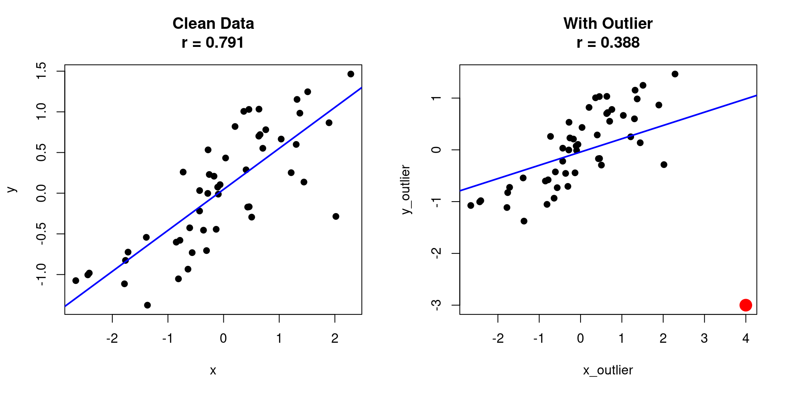

# Source the plscmd package (all files)
source("setup.R")plscmd package loaded successfully!library(ggplot2)
set.seed(42)Robust methods, internals, and real-world workflows
By the end of this lesson, you will be able to:
Standard Pearson correlation is sensitive to outliers. A single extreme value can dramatically affect results:
# Create data with an outlier
set.seed(42)
x <- rnorm(50)
y <- 0.6 * x + rnorm(50, sd = 0.5)
# Add an outlier
x_outlier <- c(x, 4)
y_outlier <- c(y, -3)
# Compare correlations
r_clean <- cor(x, y)
r_outlier <- cor(x_outlier, y_outlier)
# Visualize
par(mfrow = c(1, 2))
plot(x, y, pch = 19, main = sprintf("Clean Data\nr = %.3f", r_clean))
abline(lm(y ~ x), col = "blue", lwd = 2)
plot(x_outlier, y_outlier, pch = 19,
main = sprintf("With Outlier\nr = %.3f", r_outlier))
points(4, -3, col = "red", pch = 19, cex = 2)
abline(lm(y_outlier ~ x_outlier), col = "blue", lwd = 2)
The plscmd package provides several robust correlation methods:
| Method | Function | Description |
|---|---|---|
| Winsorized | winsorized_cor() |
Trims extreme values |
| Biweight | biweight_midcor() |
Downweights outliers |
| Percentage Bend | percentage_bend_cor() |
Robust to outliers |
| Wrapper | robust_cor() |
Unified interface |
Winsorization replaces extreme values with less extreme ones:
Pearson correlation: 0.388 Winsorized correlation: 0.725 True correlation (clean): 0.791 Uses a weighting function that downweights outliers:
A robust method based on the percentage bend:
Use robust_cor() for a consistent interface:
# Compare all methods
methods <- c("pearson", "winsorized", "biweight", "percentage_bend")
results <- sapply(methods, function(m) {
robust_cor(x_outlier, y_outlier, method = m)
})
comparison <- data.frame(
Method = methods,
Correlation = round(results, 3)
)
knitr::kable(comparison, caption = "Correlation Method Comparison")| Method | Correlation | |
|---|---|---|
| pearson | pearson | 0.388 |
| winsorized | winsorized | 0.725 |
| biweight | biweight | 0.681 |
| percentage_bend | percentage_bend | 0.721 |
All robust methods work with matrices:
# For within-matrix correlations
set.seed(42)
X <- matrix(rnorm(100), nrow = 20, ncol = 5)
# Add some outliers
X[1, 1] <- 10
X[1, 2] <- -8
# Compute correlation matrices
cor_pearson <- cor(X)
cor_robust <- robust_cor(X, method = "biweight")
cat("Pearson X1-X2 correlation:", round(cor_pearson[1, 2], 3), "\n")Pearson X1-X2 correlation: -0.606 Biweight X1-X2 correlation: 0.443
Cross-matrix correlations:Pearson: 0.767 Biweight: 0.165 The core PLS computation involves these steps:
# Pseudocode for PLS
# 1. Compute cross-covariance matrix
R <- t(X) %*% Y # or correlation matrix
# 2. Singular Value Decomposition
svd_result <- svd(R)
# 3. Extract components
u <- svd_result$u # Brain saliences
v <- svd_result$v # Behavior saliences
s <- svd_result$d # Singular values
# 4. Compute scores
usc <- X %*% u # Brain scores
vsc <- Y %*% v # Behavior scoresExplore the internal functions to understand the computation:
No documentation for 'rri_xcor' in specified packages and libraries:
you could try '??rri_xcor'Correlation matrix dimensions: 5 3 Covariance matrix dimensions: 5 3 Understanding how bootstrap samples are created:
# rri_boot_order: Generate bootstrap sample indices
# Arguments: num_subj_lst (subjects per group), num_cond, num_boot
n_subj <- 10
n_cond <- 3
num_boot <- 5
# Generate bootstrap sample orders
boot_result <- rri_boot_order(num_subj_lst = c(n_subj), num_cond = n_cond,
num_boot = num_boot)
boot_orders <- boot_result$boot_order
cat("Generated", boot_result$new_num_boot, "bootstrap samples\n")Generated 5 bootstrap samplesEach sample has 30 indicesFirst bootstrap order: 1 6 7 5 9 2 10 3 1 4 11 16 17 15 19 ...How permutation orders are generated:
Generated 5 permutation ordersFirst permutation: 4 12 27 18 20 16 11 23 15 9 14 22 17 8 10 ...Here’s a complete workflow for a research project:
# Step 1: Load and prepare data
prepare_pls_data <- function(brain_file, behav_file, groups) {
# This would load your actual data
# For demo, we simulate
n_subj <- 25
n_regions <- 50
n_behav <- 4
n_cond <- 2
brain <- matrix(rnorm(n_subj * n_cond * n_regions),
nrow = n_subj * n_cond, ncol = n_regions)
behav <- matrix(rnorm(n_subj * n_behav), nrow = n_subj, ncol = n_behav)
list(brain = brain, behav = behav, n_subj = n_subj, n_cond = n_cond)
}
# Step 2: Quality control
quality_control <- function(data) {
# Check for missing data
report <- pls_check_missing(list(data$brain), verbose = FALSE)
# Check for outliers (simple z-score method)
z_scores <- scale(data$brain)
n_outliers <- sum(abs(z_scores) > 3, na.rm = TRUE)
list(
missing_pct = report$overall_pct * 100, # Convert to percentage
n_outliers = n_outliers,
passed = report$overall_pct < 0.20 && n_outliers < 0.01 * length(data$brain)
)
}
# Step 3: Run analysis with options
run_pls_pipeline <- function(data, n_perm = 1000, n_boot = 1000) {
# Stack behavioral data
stacked_behav <- do.call(rbind,
replicate(data$n_cond, data$behav, simplify = FALSE))
# Run analysis
result <- pls_analysis(
datamat_lst = list(data$brain),
num_subj_lst = c(data$n_subj),
num_cond = data$n_cond,
option = list(
method = 3,
num_perm = n_perm,
num_boot = n_boot,
stacked_behavdata = stacked_behav,
impute_method = "mean",
verbose = FALSE
)
)
result
}
# Step 4: Generate report
generate_report <- function(result, output_dir = "results") {
if (!dir.exists(output_dir)) dir.create(output_dir)
# Summary table
summary <- pls_summary_table(result)
write.csv(summary, file.path(output_dir, "summary_table.csv"))
# Significant LVs
sig_lvs <- which(result$perm_result$sprob < 0.05)
if (length(sig_lvs) > 0) {
cat("Significant LVs found:", paste(sig_lvs, collapse = ", "), "\n")
# Save results for each significant LV
for (lv in sig_lvs) {
# Brain saliences
brain_df <- data.frame(
Region = 1:nrow(result$u),
Salience = result$u[, lv],
BSR = result$boot_result$compare_u[, lv],
SE = result$boot_result$u_se[, lv]
)
write.csv(brain_df,
file.path(output_dir, sprintf("LV%d_brain_saliences.csv", lv)))
}
}
cat("Report saved to:", output_dir, "\n")
}
# Execute the pipeline
data <- prepare_pls_data("brain.csv", "behav.csv", groups = 1)
qc <- quality_control(data)
cat("QC passed:", qc$passed, "\n")QC passed: TRUE Significant LVs found: 1
Report saved to: results # Process multiple datasets
datasets <- list(
study1 = list(brain = brain1, behav = behav1),
study2 = list(brain = brain2, behav = behav2),
study3 = list(brain = brain3, behav = behav3)
)
results <- lapply(names(datasets), function(name) {
cat("Processing:", name, "\n")
data <- datasets[[name]]
stacked_behav <- do.call(rbind, replicate(n_cond, data$behav, simplify = FALSE))
result <- pls_analysis(
datamat_lst = list(data$brain),
num_subj_lst = c(nrow(data$behav)),
num_cond = n_cond,
option = list(
method = 3,
num_perm = 1000,
num_boot = 1000,
stacked_behavdata = stacked_behav,
verbose = FALSE
)
)
# Save individual results
saveRDS(result, sprintf("%s_pls_result.rds", name))
result
})
names(results) <- names(datasets)# Simulate a two-group study (e.g., patients vs controls)
set.seed(42)
n_controls <- 20
n_patients <- 18
n_regions <- 40
n_behav <- 3
n_cond <- 2
# Control group data
brain_controls <- matrix(rnorm(n_controls * n_cond * n_regions),
nrow = n_controls * n_cond, ncol = n_regions)
# Patient group data (with altered brain-behavior relationship)
brain_patients <- matrix(rnorm(n_patients * n_cond * n_regions),
nrow = n_patients * n_cond, ncol = n_regions)
# Behavioral data
behav_controls <- matrix(rnorm(n_controls * n_behav), nrow = n_controls, ncol = n_behav)
behav_patients <- matrix(rnorm(n_patients * n_behav), nrow = n_patients, ncol = n_behav)
# Add signal (different patterns for each group)
stacked_behav_controls <- do.call(rbind, replicate(n_cond, behav_controls, simplify = FALSE))
stacked_behav_patients <- do.call(rbind, replicate(n_cond, behav_patients, simplify = FALSE))
# Controls: regions 1-10 positively correlate with behavior 1
for (r in 1:10) {
brain_controls[, r] <- brain_controls[, r] + 0.5 * stacked_behav_controls[, 1]
}
# Patients: weaker relationship
for (r in 1:10) {
brain_patients[, r] <- brain_patients[, r] + 0.2 * stacked_behav_patients[, 1]
}
# Stack data for multi-group analysis
datamat_lst <- list(brain_controls, brain_patients)
stacked_behavdata <- rbind(stacked_behav_controls, stacked_behav_patients)
# Run multi-group PLS
result_multigroup <- pls_analysis(
datamat_lst = datamat_lst,
num_subj_lst = c(n_controls, n_patients),
num_cond = n_cond,
option = list(
method = 3,
num_perm = 500,
num_boot = 500,
stacked_behavdata = stacked_behavdata,
verbose = FALSE
)
)
# Summary
cat("Multi-group PLS Results\n")Multi-group PLS Results======================= LV Singular_Value Variance_Explained_Pct Cumulative_Pct P_Value Significant
1 1 3.0719 32.03 32.03 0.0000 *
2 2 2.1442 15.60 47.63 0.0259 *
3 3 1.9125 12.41 60.04 0.0140 *
4 4 1.7229 10.07 70.12 0.0918
5 5 1.4898 7.53 77.65 0.6287
6 6 1.2721 5.49 83.14 0.9860
7 7 1.1944 4.84 87.98 0.9042
8 8 1.0664 3.86 91.84 0.9681
9 9 0.9887 3.32 95.16 0.9840
10 10 0.8769 2.61 97.77 0.9980
11 11 0.6615 1.49 99.25 0.9980
12 12 0.4688 0.75 100.00 0.9980 # 1. Reduce permutations for initial exploration
result_quick <- pls_analysis(...,
option = list(num_perm = 100, num_boot = 100, ...))
# 2. Increase for final analysis
result_final <- pls_analysis(...,
option = list(num_perm = 5000, num_boot = 5000, ...))
# 3. Use parallel processing (if implemented)
# Currently plscmd is single-threaded
# 4. Subset variables if needed
# e.g., use only top variance regions
var_per_region <- apply(brain_data, 2, var)
top_regions <- order(var_per_region, decreasing = TRUE)[1:100]
brain_reduced <- brain_data[, top_regions]Build a complete analysis workflow that:
Congratulations! You’ve completed the plscmd course. You now know how to:
?pls_analysisThank you for taking this course!
---
title: "Lesson 5: Advanced Topics"
subtitle: "Robust methods, internals, and real-world workflows"
---
## Learning Objectives
By the end of this lesson, you will be able to:
1. Use robust correlation methods for outlier-resistant analyses
2. Understand the internal architecture of plscmd
3. Build custom analysis workflows
4. Apply PLS to real research scenarios
## Setup
```{r}
#| label: setup
# Source the plscmd package (all files)
source("setup.R")
library(ggplot2)
set.seed(42)
```
## Robust Correlation Methods
### The Problem with Outliers
Standard Pearson correlation is sensitive to outliers. A single extreme value can dramatically affect results:
```{r}
#| label: outlier-demo
#| fig-width: 10
#| fig-height: 5
# Create data with an outlier
set.seed(42)
x <- rnorm(50)
y <- 0.6 * x + rnorm(50, sd = 0.5)
# Add an outlier
x_outlier <- c(x, 4)
y_outlier <- c(y, -3)
# Compare correlations
r_clean <- cor(x, y)
r_outlier <- cor(x_outlier, y_outlier)
# Visualize
par(mfrow = c(1, 2))
plot(x, y, pch = 19, main = sprintf("Clean Data\nr = %.3f", r_clean))
abline(lm(y ~ x), col = "blue", lwd = 2)
plot(x_outlier, y_outlier, pch = 19,
main = sprintf("With Outlier\nr = %.3f", r_outlier))
points(4, -3, col = "red", pch = 19, cex = 2)
abline(lm(y_outlier ~ x_outlier), col = "blue", lwd = 2)
```
### Available Robust Methods
The plscmd package provides several robust correlation methods:
| Method | Function | Description |
|--------|----------|-------------|
| Winsorized | `winsorized_cor()` | Trims extreme values |
| Biweight | `biweight_midcor()` | Downweights outliers |
| Percentage Bend | `percentage_bend_cor()` | Robust to outliers |
| Wrapper | `robust_cor()` | Unified interface |
### Winsorized Correlation
Winsorization replaces extreme values with less extreme ones:
```{r}
#| label: winsorized
# Winsorized correlation (default: trim 10% from each tail)
r_wins <- winsorized_cor(x_outlier, y_outlier, trim = 0.1)
cat("Pearson correlation:", round(r_outlier, 3), "\n")
cat("Winsorized correlation:", round(r_wins, 3), "\n")
cat("True correlation (clean):", round(r_clean, 3), "\n")
```
### Biweight Midcorrelation
Uses a weighting function that downweights outliers:
```{r}
#| label: biweight
# Biweight midcorrelation
r_biweight <- biweight_midcor(x_outlier, y_outlier)
cat("Biweight midcorrelation:", round(r_biweight, 3), "\n")
```
### Percentage Bend Correlation
A robust method based on the percentage bend:
```{r}
#| label: percentage-bend
# Percentage bend correlation
r_pbend <- percentage_bend_cor(x_outlier, y_outlier, beta = 0.2)
cat("Percentage bend correlation:", round(r_pbend, 3), "\n")
```
### Unified Interface
Use `robust_cor()` for a consistent interface:
```{r}
#| label: robust-cor
# Compare all methods
methods <- c("pearson", "winsorized", "biweight", "percentage_bend")
results <- sapply(methods, function(m) {
robust_cor(x_outlier, y_outlier, method = m)
})
comparison <- data.frame(
Method = methods,
Correlation = round(results, 3)
)
knitr::kable(comparison, caption = "Correlation Method Comparison")
```
### Matrix Correlations
All robust methods work with matrices:
```{r}
#| label: robust-matrix
# For within-matrix correlations
set.seed(42)
X <- matrix(rnorm(100), nrow = 20, ncol = 5)
# Add some outliers
X[1, 1] <- 10
X[1, 2] <- -8
# Compute correlation matrices
cor_pearson <- cor(X)
cor_robust <- robust_cor(X, method = "biweight")
cat("Pearson X1-X2 correlation:", round(cor_pearson[1, 2], 3), "\n")
cat("Biweight X1-X2 correlation:", round(cor_robust[1, 2], 3), "\n")
# For cross-matrix correlations, use individual pairs
x1 <- X[, 1]
y1 <- rnorm(20)
y1[1] <- 10 # Add outlier
cat("\nCross-matrix correlations:\n")
cat("Pearson:", round(cor(x1, y1), 3), "\n")
cat("Biweight:", round(robust_cor(x1, y1, method = "biweight"), 3), "\n")
```
## Understanding Package Internals
### The PLS Algorithm
The core PLS computation involves these steps:
```{r}
#| label: pls-internals
#| eval: false
# Pseudocode for PLS
# 1. Compute cross-covariance matrix
R <- t(X) %*% Y # or correlation matrix
# 2. Singular Value Decomposition
svd_result <- svd(R)
# 3. Extract components
u <- svd_result$u # Brain saliences
v <- svd_result$v # Behavior saliences
s <- svd_result$d # Singular values
# 4. Compute scores
usc <- X %*% u # Brain scores
vsc <- Y %*% v # Behavior scores
```
### Key Internal Functions
Explore the internal functions to understand the computation:
```{r}
#| label: internal-functions
# rri_xcor: Compute cross-correlation/covariance matrix
?rri_xcor
# Example usage
X <- matrix(rnorm(50), nrow = 10, ncol = 5)
Y <- matrix(rnorm(30), nrow = 10, ncol = 3)
# Correlation mode
R_cor <- rri_xcor(X, Y, cormode = 0)
cat("Correlation matrix dimensions:", dim(R_cor), "\n")
# Covariance mode
R_cov <- rri_xcor(X, Y, cormode = 2)
cat("Covariance matrix dimensions:", dim(R_cov), "\n")
```
### Bootstrap Resampling
Understanding how bootstrap samples are created:
```{r}
#| label: bootstrap-internals
# rri_boot_order: Generate bootstrap sample indices
# Arguments: num_subj_lst (subjects per group), num_cond, num_boot
n_subj <- 10
n_cond <- 3
num_boot <- 5
# Generate bootstrap sample orders
boot_result <- rri_boot_order(num_subj_lst = c(n_subj), num_cond = n_cond,
num_boot = num_boot)
boot_orders <- boot_result$boot_order
cat("Generated", boot_result$new_num_boot, "bootstrap samples\n")
cat("Each sample has", n_subj * n_cond, "indices\n")
cat("First bootstrap order:", head(boot_orders[, 1], 15), "...\n")
```
### Permutation Testing
How permutation orders are generated:
```{r}
#| label: perm-internals
# rri_perm_order: Generate permutation orders
# Arguments: num_subj_lst, num_cond, num_perm
num_perm <- 5
perm_orders <- rri_perm_order(num_subj_lst = c(n_subj), num_cond = n_cond,
num_perm = num_perm)
cat("Generated", num_perm, "permutation orders\n")
cat("First permutation:", head(perm_orders[, 1], 15), "...\n")
# Permutation shuffles condition labels within subjects
```
## Building Custom Workflows
### Custom Analysis Pipeline
Here's a complete workflow for a research project:
```{r}
#| label: custom-workflow
# Step 1: Load and prepare data
prepare_pls_data <- function(brain_file, behav_file, groups) {
# This would load your actual data
# For demo, we simulate
n_subj <- 25
n_regions <- 50
n_behav <- 4
n_cond <- 2
brain <- matrix(rnorm(n_subj * n_cond * n_regions),
nrow = n_subj * n_cond, ncol = n_regions)
behav <- matrix(rnorm(n_subj * n_behav), nrow = n_subj, ncol = n_behav)
list(brain = brain, behav = behav, n_subj = n_subj, n_cond = n_cond)
}
# Step 2: Quality control
quality_control <- function(data) {
# Check for missing data
report <- pls_check_missing(list(data$brain), verbose = FALSE)
# Check for outliers (simple z-score method)
z_scores <- scale(data$brain)
n_outliers <- sum(abs(z_scores) > 3, na.rm = TRUE)
list(
missing_pct = report$overall_pct * 100, # Convert to percentage
n_outliers = n_outliers,
passed = report$overall_pct < 0.20 && n_outliers < 0.01 * length(data$brain)
)
}
# Step 3: Run analysis with options
run_pls_pipeline <- function(data, n_perm = 1000, n_boot = 1000) {
# Stack behavioral data
stacked_behav <- do.call(rbind,
replicate(data$n_cond, data$behav, simplify = FALSE))
# Run analysis
result <- pls_analysis(
datamat_lst = list(data$brain),
num_subj_lst = c(data$n_subj),
num_cond = data$n_cond,
option = list(
method = 3,
num_perm = n_perm,
num_boot = n_boot,
stacked_behavdata = stacked_behav,
impute_method = "mean",
verbose = FALSE
)
)
result
}
# Step 4: Generate report
generate_report <- function(result, output_dir = "results") {
if (!dir.exists(output_dir)) dir.create(output_dir)
# Summary table
summary <- pls_summary_table(result)
write.csv(summary, file.path(output_dir, "summary_table.csv"))
# Significant LVs
sig_lvs <- which(result$perm_result$sprob < 0.05)
if (length(sig_lvs) > 0) {
cat("Significant LVs found:", paste(sig_lvs, collapse = ", "), "\n")
# Save results for each significant LV
for (lv in sig_lvs) {
# Brain saliences
brain_df <- data.frame(
Region = 1:nrow(result$u),
Salience = result$u[, lv],
BSR = result$boot_result$compare_u[, lv],
SE = result$boot_result$u_se[, lv]
)
write.csv(brain_df,
file.path(output_dir, sprintf("LV%d_brain_saliences.csv", lv)))
}
}
cat("Report saved to:", output_dir, "\n")
}
# Execute the pipeline
data <- prepare_pls_data("brain.csv", "behav.csv", groups = 1)
qc <- quality_control(data)
cat("QC passed:", qc$passed, "\n")
if (qc$passed) {
result <- run_pls_pipeline(data, n_perm = 500, n_boot = 500)
generate_report(result)
}
```
### Batch Processing Multiple Datasets
```{r}
#| label: batch-processing
#| eval: false
# Process multiple datasets
datasets <- list(
study1 = list(brain = brain1, behav = behav1),
study2 = list(brain = brain2, behav = behav2),
study3 = list(brain = brain3, behav = behav3)
)
results <- lapply(names(datasets), function(name) {
cat("Processing:", name, "\n")
data <- datasets[[name]]
stacked_behav <- do.call(rbind, replicate(n_cond, data$behav, simplify = FALSE))
result <- pls_analysis(
datamat_lst = list(data$brain),
num_subj_lst = c(nrow(data$behav)),
num_cond = n_cond,
option = list(
method = 3,
num_perm = 1000,
num_boot = 1000,
stacked_behavdata = stacked_behav,
verbose = FALSE
)
)
# Save individual results
saveRDS(result, sprintf("%s_pls_result.rds", name))
result
})
names(results) <- names(datasets)
```
## Real-World Example: Multi-Group Analysis
```{r}
#| label: multigroup
# Simulate a two-group study (e.g., patients vs controls)
set.seed(42)
n_controls <- 20
n_patients <- 18
n_regions <- 40
n_behav <- 3
n_cond <- 2
# Control group data
brain_controls <- matrix(rnorm(n_controls * n_cond * n_regions),
nrow = n_controls * n_cond, ncol = n_regions)
# Patient group data (with altered brain-behavior relationship)
brain_patients <- matrix(rnorm(n_patients * n_cond * n_regions),
nrow = n_patients * n_cond, ncol = n_regions)
# Behavioral data
behav_controls <- matrix(rnorm(n_controls * n_behav), nrow = n_controls, ncol = n_behav)
behav_patients <- matrix(rnorm(n_patients * n_behav), nrow = n_patients, ncol = n_behav)
# Add signal (different patterns for each group)
stacked_behav_controls <- do.call(rbind, replicate(n_cond, behav_controls, simplify = FALSE))
stacked_behav_patients <- do.call(rbind, replicate(n_cond, behav_patients, simplify = FALSE))
# Controls: regions 1-10 positively correlate with behavior 1
for (r in 1:10) {
brain_controls[, r] <- brain_controls[, r] + 0.5 * stacked_behav_controls[, 1]
}
# Patients: weaker relationship
for (r in 1:10) {
brain_patients[, r] <- brain_patients[, r] + 0.2 * stacked_behav_patients[, 1]
}
# Stack data for multi-group analysis
datamat_lst <- list(brain_controls, brain_patients)
stacked_behavdata <- rbind(stacked_behav_controls, stacked_behav_patients)
# Run multi-group PLS
result_multigroup <- pls_analysis(
datamat_lst = datamat_lst,
num_subj_lst = c(n_controls, n_patients),
num_cond = n_cond,
option = list(
method = 3,
num_perm = 500,
num_boot = 500,
stacked_behavdata = stacked_behavdata,
verbose = FALSE
)
)
# Summary
cat("Multi-group PLS Results\n")
cat("=======================\n")
summary_table <- pls_summary_table(result_multigroup)
print(summary_table)
```
## Performance Optimization
### Tips for Large Datasets
```{r}
#| label: performance-tips
#| eval: false
# 1. Reduce permutations for initial exploration
result_quick <- pls_analysis(...,
option = list(num_perm = 100, num_boot = 100, ...))
# 2. Increase for final analysis
result_final <- pls_analysis(...,
option = list(num_perm = 5000, num_boot = 5000, ...))
# 3. Use parallel processing (if implemented)
# Currently plscmd is single-threaded
# 4. Subset variables if needed
# e.g., use only top variance regions
var_per_region <- apply(brain_data, 2, var)
top_regions <- order(var_per_region, decreasing = TRUE)[1:100]
brain_reduced <- brain_data[, top_regions]
```
## Exercise 5: Complete Analysis Workflow
Build a complete analysis workflow that:
1. Checks data quality
2. Handles missing data
3. Runs PLS analysis
4. Creates publication figures
5. Exports results
```{r}
#| label: exercise-5
#| eval: false
# Your comprehensive workflow here
# 1. Create or load data
# ...
# 2. Quality control
# ...
# 3. Handle missing data
# ...
# 4. Run analysis
# ...
# 5. Create figures
# ...
# 6. Export results
# ...
```
## Course Summary
Congratulations! You've completed the plscmd course. You now know how to:
### Lesson 1: Introduction
- Understand what PLS does and when to use it
- Prepare data in the correct format
- Run basic analyses
### Lesson 2: Results
- Interpret permutation tests
- Use bootstrap ratios
- Make statistical decisions
### Lesson 3: Visualization
- Create publication-quality figures
- Customize colors and fonts
- Export in various formats
### Lesson 4: Missing Data
- Diagnose missing data patterns
- Use single and multiple imputation
- Apply Rubin's rules
### Lesson 5: Advanced Topics
- Use robust correlation methods
- Understand package internals
- Build custom workflows
## Further Resources
### PLS Literature
- McIntosh & Lobaugh (2004). Partial Least Squares Analysis of Neuroimaging Data. NeuroImage.
- Krishnan et al. (2011). Partial Least Squares (PLS) methods for neuroimaging.
### R Resources
- [ggplot2 documentation](https://ggplot2.tidyverse.org/)
- [patchwork for combining plots](https://patchwork.data-imaginist.com/)
### Statistics
- Rubin (1987). Multiple Imputation for Nonresponse in Surveys.
- van Buuren (2018). Flexible Imputation of Missing Data.
## Getting Help
- Check function documentation: `?pls_analysis`
- Report issues: GitHub repository
- Community forums: R neuroimaging groups
Thank you for taking this course!